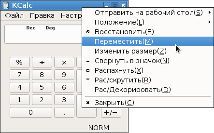

Чтобы в LXDE переместить окно с помощью клавиатуры, надо выяснить две вещи:
1. Какой комбинацией клавиш вызывается контекстное меню окна. То есть то меню, которое появляется при клике правой кнопкой мыши на заголовке окна. Для этого надо посмотреть настройку:
Меню - Параметры - Настроить горячие клавиши - Строка "показать меню"
В стандартном LXDE настроено по-дефолту комбинация Alt+Пробел.
2. Выяснить, какой клавишей в контекстном меню вызывается пункт "Переместить". Это необходимо в случае, если окно уехало так, что контекстное меню тоже не видно. Чтобы это узнать, можно запустить любую небольшую программу, например Калькулятор, вызвать его контекстное меню, и посмотреть, что написано рядом с пунктом "Переместить". В стандартной настройке будет написана английская буква M (что обозначает Move):

Вот эту клавишу и надо нажать, без всяких клавиш-модификаторов.
После этих действий окно станет перемещаться курсорными клавишами (стрелками). Для завершения перемещения надо нажать Enter.